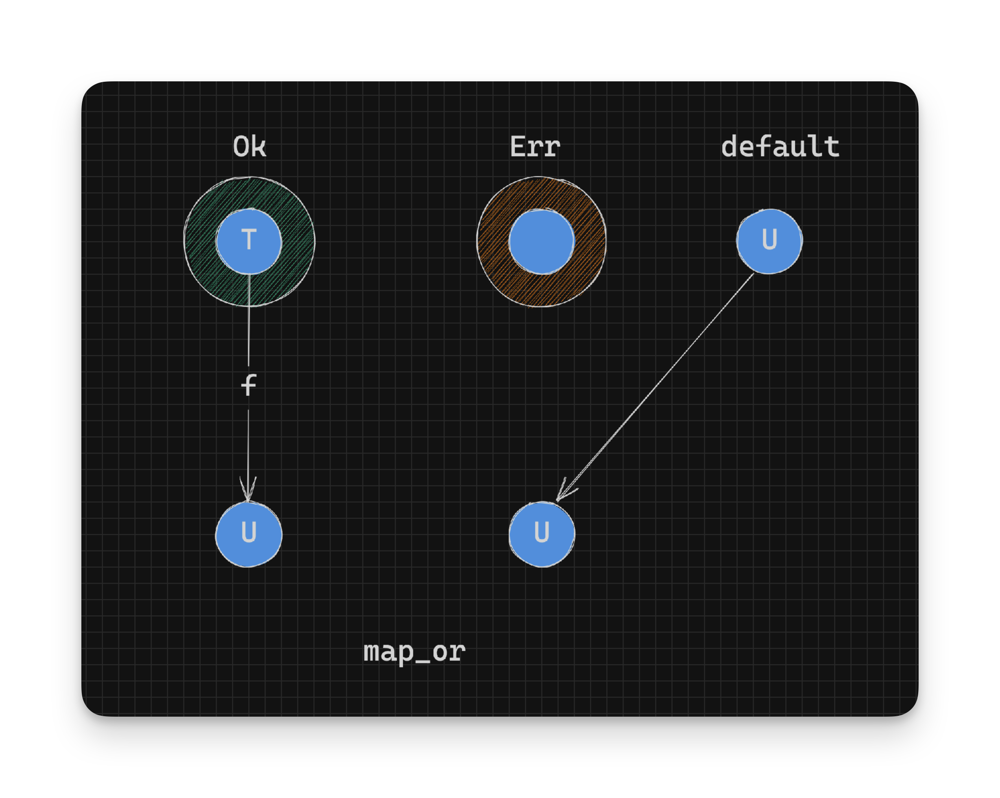

Working With Rust Result - Extracting Values - Part 2
Pattern Matching
Since Rust supports pattern matching, a simple way to extract a value from a Result is to pattern match on its constructors:
fn print_age(age_result: Result<u8, String>) {
match age_result {
Ok(age) => println!("You are twenty five!"), // We could also do something with 'age' if we wanted to.
Err(error) => println!("Imposter! {}", error),
}
}
print_age(twenty_five(20)); // Imposter! 20 is not 25!
print_age(twenty_five(25)); // You are twenty five!map_or_else
Another way to extract the values from a Result is to use the map_or_else function:
pub fn map_or_else<U, D: FnOnce(E) -> U, F: FnOnce(T) -> U>(self, default: D, f: F) -> U {
match self {
Ok(t) => f(t),
Err(e) => default(e),
}
}In the above definition we get two functions: default and f. Both functions convert a value into the same result type U:
// pseudocode
f : T -> U // Convert success value to a U
default: E -> U // Convert error value to a Udefault is used on the error value inside an Err instance and f is used on the success value inside an Ok instance. map_or_else has simply extracted the “wrapped” value in each constructor and run a function on each of those values to produce a result of the same type in all cases: U.
It’s important to note that the return type of this function is: U and not a Result. We have left the confines of our Result wrappers.
Technically
Ucould represent any type, even aResult, but we’ll ignore that for now.
For example to get a pass or failing grade:
fn pass_or_fail(grade: u8) -> Result<String, String> {
if grade < 50 {
Err(format!("You have failed miserably with a grade of: {grade}"))
} else {
Ok(format!("Here's your certificate, for a magnificent grade of: {grade}"))
}
}
let result1 = pass_or_fail(45).map_or_else(|e| e.to_string(), |t| t);
let result2 = pass_or_fail(75).map_or_else(|e| e.to_string(), |t| t);
println!("{result1}"); // You have failed miserably with a grade of: 45
println!("{result2}"); // Here's your certificate, for a magnificent grade of: 75map_or
Another function in the same family of functions is map_or:
pub fn map_or<U, F: FnOnce(T) -> U>(self, default: U, f: F) -> U {
match self {
Ok(t) => f(t),
Err(_) => default, // We ignore the value and return a default
}
}Note how we ignore the value inside of
ErrwithErr(_).
In the above definition, a function f runs on the value inside the Ok instance and a default value is returned if it’s an Err instance:
// pseudocode
f : T -> U // Convert success value to a U
default: -> U // Return a U if in errorNotice that we completely ignore the value inside of the Err instance.

map_or differs from map_or_else, in that it only takes a single function f and a default value to return in the Err case. This can be useful if you don’t care about what the error case and simple want to return some default value on error.
let result1 = pass_or_fail(45).map_or("You failed :(".to_owned(), |t| t);
let result2 = pass_or_fail(75).map_or("You failed :(".to_owned(), |t| t);
println!("{result1}"); // You have failed :(
println!("{result2}"); // Here's your certificate, for a magnificent grade of: 75- Continue on to Extracting Values That Can Panic
- Back to TOC